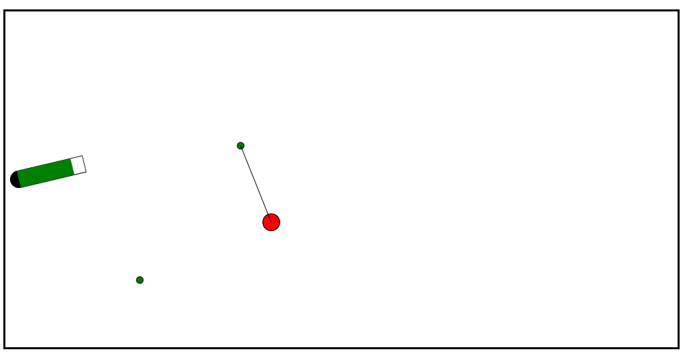

Tdoan08's Game
Play GameSwing Game
This is the first game that I have ever made by myself.
As you can see on the left, it is inspired by my favorite character - Spiderman
The game is made by merely javascript and canvas
and is expected to develop more in the near future.